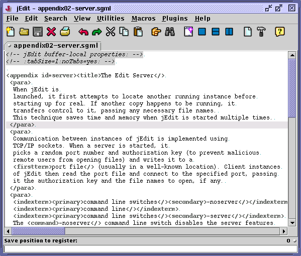

Registers
A register is place where you can save a text string or caret position for later use. Each register has a single-character name; hence the number of available registers is limited by how many keys can be typed on your keyboard. Register contents are global to the editor; all buffers and views share the same set. Registers are not persistent and their contents are lost when jEdit exits. The register $ is an alias for the clipboard, and therefore registers can be considered as an extension of the clipboard concept.
Edit>Registers>View Registers (keyboard equivalent: F6) displays a dialog box for viewing register contents. The popup menu lists all defined registers; selecting one will display its contents and type (text or position). It is not possible to change or add registers in this dialog box; it is only for viewing.
Figure 4-3. The View Registers dialog box

Register manipulation commands wait for a key press and use that key as the register to operate on. So to copy the selection to register X, you would type Control-R Control-C X.
Figure 4-4. A register command prompting for a register to operate on

Text Registers
Edit>Registers>Cut to Register (keyboard equivalent: Control-R Control-X) reads the next character entered at the keyboard, and stores the selected text in that register, removing it from the buffer.
Edit>Registers>Copy to Register (keyboard equivalent: Control-R Control-C) reads the next character entered at the keyboard, and stores the selected text in that register, leaving it in the buffer.
Edit>Registers>Append to Register (keyboard equivalent: Control-R Control-A) reads the next character entered at the keyboard, and appends the selected text to that register, leaving the original text in the buffer. This can be to collate distinct text strings from several places.
Edit>Registers>Paste from Register (keyboard equivalent: Control-R Control-V) reads the next character entered at the keyboard, and replaces the selection with the contents of that register. Every time you paste from a register, the pasted text is added to the list in the Edit>Paste Previous dialog box; see the section called The Clipboard in Chapter 3.
Position Registers
Edit>Registers>Save Position to Register (keyboard equivalent: Control-T) reads the next character entered at the keyboard, and stores the current buffer name and caret position in that register. Because buffer names are saved in position registers, you can use them to quickly flip between multiple buffers.
Edit>Registers>Go to Register (keyboard equivalent: Control-Y) reads the next character entered at the keyboard, switches to the buffer name stored in that register (opening it if necessary), and moves the caret to the saved position.
Edit>Registers>Select to Register (keyboard equivalent: Control-U) reads the next character entered at the keyboard, and creates a selection from the current caret position to the offset specified in that register. Keep in mind that if the register points to a different buffer than the current one, the resulting selection will most likely be meaningless.
Edit>Registers>Swap Position with Register (keyboard equivalent: Control-K) reads the next character entered at the keyboard, and swaps the caret position and current buffer with that entered in the register. If invoked repeatedly, it can be used to flip between two buffers and/or caret positions.
Note: Caret positions cannot be saved to the $ register (clipboard).
File Name Registers
Registers can also be used to store file names to edit. Internally, jEdit makes no distinction between a file name and text register; so for example, you can paste a file name register into a buffer to get the file's name.
Edit>Registers>Save File Name to Register (keyboard equivalent: Control-R Control-F) reads the next character entered at the keyboard and stores the current buffer's path name in that register.
Edit>Registers>Go to Register (keyboard equivalent: Control-Y) reads the next character entered at the keyboard and opens the file whose name is stored in that register. This is the same command used to go to a position register.